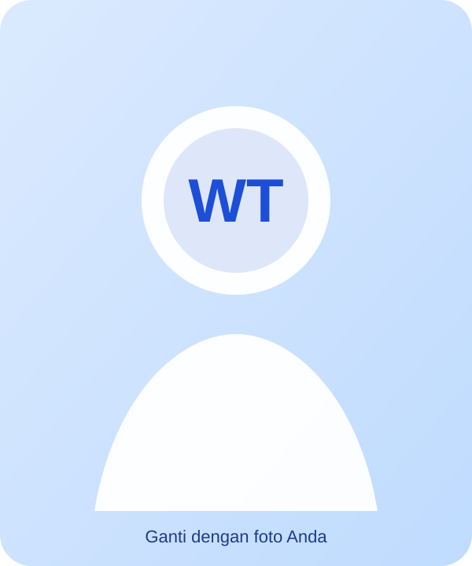

Guru Digital • RPL • PTGM
Belajar teknologi melalui praktik, proyek, dan karya nyata.
Berfokus pada pembelajaran berbasis proyek, pengembangan web, multimedia, dan pemanfaatan teknologi digital yang relevan dengan kebutuhan siswa SMK.
Dashboard Pembelajaran
Akses cepat layanan digital
Satu halaman untuk membuka layanan utama yang digunakan siswa selama kegiatan belajar.
Mata Pelajaran
Kelas XI RPL dan XII PTGM
Materi disusun ringkas agar siswa dapat melihat fokus pembelajaran, proyek, dan sumber belajar yang tersedia.
XI RPLFase F
Pemrograman Web / HTML
Pembelajaran dasar sampai pengembangan halaman web responsif melalui proyek yang kontekstual.
- Struktur HTML5 dan semantic HTML
- Form, tabel, gambar, audio, dan video
- CSS dasar dan layout responsif
- JavaScript dasar dan interaksi halaman
- Publikasi proyek menggunakan GitHub Pages
XII PTGMFase F
Pemrograman Teks, Grafis, dan Multimedia
Pembelajaran multimedia, literasi digital, dan produksi karya digital dengan pendekatan PBL dan PjBL.
- Objek teks, gambar, audio, dan video
- Produksi konten multimedia
- Literasi digital kreatif dan etis
- Penyaringan konten negatif dan keamanan digital
- Proyek multimedia terintegrasi
Pusat Materi
Materi, LKPD, dan aktivitas
Gunakan tombol kategori untuk menyaring sumber belajar berdasarkan kelas.
Struktur Dokumen HTML
Materi dasar elemen, atribut, semantic HTML, dan struktur halaman yang benar.
Unduh materiLKPD Website Wisata Lokal
Proyek membuat website informasi wisata sederhana dengan struktur HTML yang sistematis.
Unduh LKPDPublikasi GitHub Pages
Panduan singkat mengunggah proyek web dan menerbitkannya melalui GitHub Pages.
Baca panduanObjek Multimedia
Materi pengolahan dan penerapan gambar, audio, video, dan teks dalam karya digital.
Unduh materiKarya Kreatif dan Etis
LKPD literasi digital, hak cipta, etika bermedia, dan penyaringan konten negatif.
Unduh LKPDProyek Multimedia Terintegrasi
Kerangka proyek akhir untuk menghasilkan produk multimedia yang relevan dan dapat dipresentasikan.
Lihat contoh karya
Portofolio Siswa
Contoh karya dan proyek pembelajaran
Bagian ini dapat dihubungkan ke repository GitHub, Google Drive, atau halaman proyek siswa.
Website Wisata Lokal
Proyek XI RPL untuk menerapkan semantic HTML, media, navigasi, dan layout responsif.
Media Interaktif Sekolah
Karya multimedia XII PTGM yang memadukan teks, grafis, audio, dan video secara terencana.
Kampanye Literasi Digital
Proyek kreatif untuk menyampaikan pesan penggunaan teknologi yang etis, aman, dan bertanggung jawab.
Download Center
Modul dan LKPD
File contoh sudah tersedia di paket. Anda dapat menggantinya dengan dokumen PDF atau DOCX milik Anda.